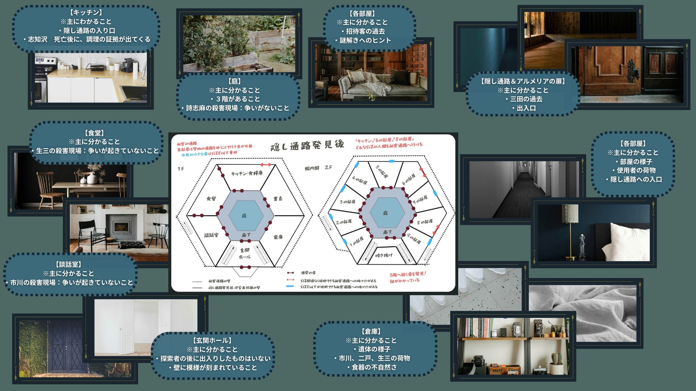

探索個所の概要図

招待客の行動
| 日付 | 探索 | 市川 睦月 |
二戸 仁 |
生三 宮 |
一ノ瀬 イチカ |
双葉 宗次 |
三田 満美 |
詩志麻 司馬 |
御膳 檎檎 |
陸良 ゼスク |
志知沢 七 |
八月朔日 八重 |
九重 弓香 |
|---|---|---|---|---|---|---|---|---|---|---|---|---|---|
| 3/25 | 探索① | 談話室 | 2の部屋 | 3の部屋 | 3の部屋 | 6の部屋 | 7の部屋 | 隠し部屋 | 談話室 | ||||
| 探索② | 1の部屋 | 2の部屋 | 3の部屋 | 3の部屋 | 書斎 | キッチン | 隠し部屋 | キッチン | |||||
| 探索③ | 1の部屋 | 庭 | 書斎 | 書斎 | キッチン | 庭 | 隠し部屋 | 4の部屋 | |||||
| 探索④ | 談話室 | 書斎 | 庭 | 庭 | 6の部屋 | キッチン | 隠し部屋 | キッチン | |||||
| 探索⑤ | ホール | 談話室 | 3の部屋 | 5の部屋 | 庭 | 7の部屋 | 隠し部屋 | 9の部屋 | |||||
| 3/26 | 探索① | 庭 | 庭 | 3の部屋 | 3の部屋 | 6の部屋 | 隠し部屋 | 食堂 | |||||
| 探索② | 書斎 | 2の部屋 | 3の部屋 | 3の部屋 | キッチン | 隠し部屋 | キッチン | ||||||
| 探索③ | 1の部屋 | 談話室 | ホール | ホール | 書斎 | 隠し部屋 | 倉庫 | ||||||
| 探索④ | 談話室 | 書斎 | 庭 | 庭 | キッチン | 隠し部屋 | キッチン | ||||||
| 探索⑤ | 1の部屋 | 2の部屋 | 3の部屋 | 5の部屋 | 庭 | 隠し部屋 | 9の部屋 | ||||||
| 3/27 | 探索① | 庭 | 庭 | キッチン | 6の部屋 | 隠し部屋 | 倉庫 | ||||||
| 探索② | 1の部屋 | 書斎 | 倉庫 | キッチン | 隠し部屋 | キッチン | |||||||
| 探索③ | 書斎 | ホール | 談話室 | 食堂 | 隠し部屋 | 庭 | |||||||
| 探索④ | 談話室 | 庭 | 庭 | キッチン | 隠し部屋 | キッチン | |||||||
| 探索⑤ | 1の部屋 | 2の部屋 | 9の部屋 | 庭 | 隠し部屋 | 9の部屋 | |||||||
| 3/28 | 探索① | 談話室 | 談話室 | 談話室 | 隠し部屋 | 談話室 | |||||||
| 探索② | 談話室 | 談話室 | 談話室 | 隠し部屋 | キッチン | ||||||||
| 探索③ | 談話室 | 談話室 | 談話室 | 隠し部屋 | 談話室 | ||||||||
| 探索④ | 談話室 | 談話室 | 談話室 | 隠し部屋 | キッチン | ||||||||
| 探索⑤ | 談話室 | 談話室 | 談話室 | 隠し部屋 | キッチン |
裏話と会話イベント
| 裏話と会話イベント | 内容 |
|---|---|
| 詩志麻が行ったこと | 詩志麻自身は早く殺される可能性が高いため、他の招待客が手を出しにくい九重を媒介にして探索者の補助をした。探索者の宛ての手紙や、25日が九重が鍵を渡す決断をしたのも、規則の抜け穴を九重に説明していたから。書斎に自分たちの過去もあることから書斎を調べるようにと、書斎に上杉暗号の資料を残したのも詩志麻である。 |
| 九重と志知沢の関係 | 九重は志知沢を弟に重ねてみている。 志知沢は九重の料理と優しさに感動。願いごとで九重の孤児院に仲間を保護するように要望するなどしている。 |
| 館の食事 | 25日は九重と志知沢が作っているが、志知沢の死後は陸良が手伝っている。そのため食事も豪華に。 なお、0325探索②の裏話として昼食に志知沢が好物のビーフシチューを作っているが0328探索④で九重が夕食をビーフシチューにするというのがある。 |
| 双葉と志知沢 | 0325探索④庭にて、志知沢と双葉の会話がありそこで双葉が九重を嫌っていることがわかる。 |
| 主催者の名前 | 御膳が0325探索、⑤0326探索⑤の会話、27の夕食にて主催者が「ネア」という言葉を口にしている。また、0326探索④、0327探索②にて「八日刃」を双葉が話す。 |
| 詩志麻の掃除 | 2の部屋で二戸を殺した詩志麻だったが、さすがに九重に掃除させるのは酷だと思い自分で掃除をした。 →0325探索①②、0326探索②⑤双葉の会話より |
| 志知沢の魅力 | 0325探索①⑤の探索で陸良に話しかけると、志知沢が魅力的という会話になる。物理的な美味しそうなので、注意されたし。 |
| 志知沢の気遣い | 志知沢は8の部屋の招待客が隠し部屋におり、扱いが良くないことを知っている。そのため、探索には早めに助けたほうがいいと助言をしている。 →0325探索①志知沢 |
| 一ノ瀬の部屋の態度 | 一ノ瀬と1の部屋で話すときのみ、一ノ瀬が1の部屋にだけある外へと通じる小部屋を隠そうとするという心情を感じとれる。 |
| 志知沢の忠告 | 探索②にて、志知沢から「一ノ瀬と双葉、陸良には気を付けたほうがいい」と言われる。 |
| 陸良の料理の隠し味 | 0325探索③で陸良に話しかけると、隠し味は愛情という話がある。 ※0326、0327の料理には陸良の隠し味はない。 |
| 九重の弟 | ９の部屋の写真「② 九重と九重と似た10歳前後の少年が笑顔の写真」でもでてくるが、会話としては、0325探索④の志知沢と0326探索⑤九重にて弟の話が出てくる |
| 御膳の違和感 | 0325探索④にて、御膳が詩志麻に対してここに死にに来たようだから生かせないと言う。 0327探索時に話すと御膳の様子がおかしい。 |
| 御膳の身長 | 隠し通路のあとに、「秘密の話」として全員を呼び出して隠し通路の共有ができる。その際に御膳が生きていると、御膳が狭いほうの出入口の使用ができSIZ8以下であることがわかる。 |
| 双葉の探索者嫌い | 0325探索④にて陸良があなたたちに双葉に気を付けるよう忠告をする |
| 安心する三田 | 0325探索⑤にて三田と会話すると、生三が死んでほっとする三田に会える |
| 志知沢の願い | 0325探索⑤にて志知沢と会話すると、願い事をかなえるために命を捨てられるかという話を聞ける。また、ここを出たら料理を勉強したいなどの話が聞ける |
| 志知沢の違和感 | 0326探索②一ノ瀬の会話で志知沢が痛みを感じない体であることが語られる（これは一ノ瀬が志知沢の資料を見たからで、この館で起きたことによる知識ではない） |
| 志知沢の食器 | 0326探索①庭にて、一ノ瀬と双葉の会話から志知沢が力強いために食器の柄を折った話が聞ける 0326探索③0327探索①倉庫でも同様に九重から聞ける |
| インスタント神様 | 0326探索②双葉との会話。御膳が神様の作り方を話していたことを聞ける。 |
| 庭の死体 | 0326探索④庭にて、志知沢の遺体を探す御膳と三田と遭遇。庭には埋められていないことが分かる。 |
| ２色の瞳 | １０年前に集団自殺を起こした宗教団体の神が２色の瞳だったことを言う。 |
| ２００年生きた人 | 0327探索③ホールにて双葉から聞ける |
| ペナルティ | 0327探索④庭、双葉が推理を間違えるとなにかしらの探索者への不都合が発生することをにおわす |
| やっていない人 | 0327探索⑤この館に来てからやっていないのは双葉と一ノ瀬が話す |
| 九重と御膳 | 0327探索⑤、御膳が九重と話しているがとても機嫌が悪そうにしている。 |